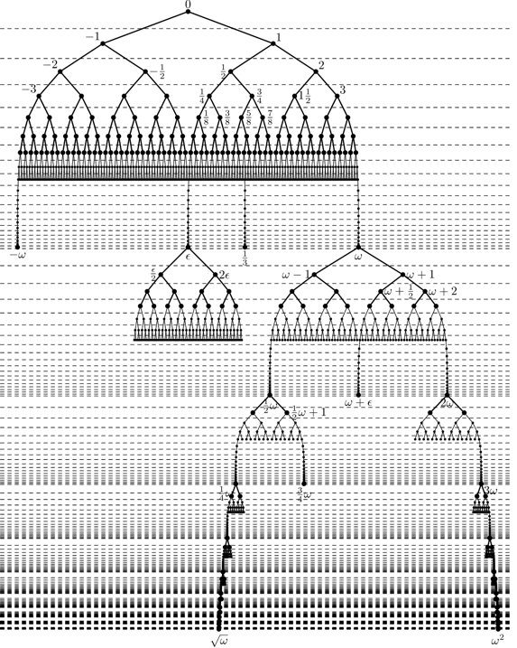

What if I requested the last room at the Hilbert's Hotel?
“Welcome to Hilbert’s Hotel, transfinitely serving your needs since 1883! How may we be of service?”
“Yes, I’d like to have a room, please.”
“Very good, sir. Which room would you prefer? Our rooms are numbered 1, 2, 3, and so on – in fact we have a room for every natural number! Our prime rooms are, well, prime, and we also have a special tonight for rooms 1,729 and 196,884, if you care to…”
“So, all rooms are available? The place is… empty?”
“Oh no, sir, funny you should ask! In fact quite the opposite is true. All our rooms are currently occupied! But, we pride ourselves on our efficiency, so if you choose to stay in room 1,729 for example – which as I mentioned we have a truly unique special for tonight, sir, I warmly suggest you consider it – we simply move all of our guests in rooms 1,729, 1,730, 1,731 and so on, we move them all one room up, vacating room 1,729. It's no hassle at all.”
“So… you can put me in any room I wish?”
“Absolutely sir, and I especially recommend room 1,729, and did I also mention room 196…”
“Yes yes. So, I’d like the last room please.”
“Excuse me?”
“I’d like to stay in the last room.”
“The last room?”
“Yes.”
“You mean room 1?”
“No, that's the first room. I want the last one, please.”
“But… sir, as I've explained, we have a room for every natural number. I'm not aware of a last natural number, and, um, I don’t think there is one. Would you like to hear about our specials…?”
“Look, I don't have time for this. I prefer not to have anyone in a room with a number greater than mine, and if you can't accommodate I'll take my business to the Sheraton Interuniversal down the street. Thank you.”
“Wait! Sir, please, I'm just an undergrad here. Please let me fetch my manager, I'm sure she’ll be able to help.”
“Hi, my name is Julia. I understand you require the last room, Mr…?”
“Zzyzzek. Zwawoy Zzyzzek.”
“Well then, that explains a few things. Alright, Mr. Zzyzzek, we pride ourselves on our transfinite service, and I can accommodate your request, it won’t be a problem. You’ll reside in the last room at the Hilbert Hotel. Just give us a few moments to get it set up.”
“Excellent. What would be my room number?”
“Ah, of course. You’ll be in room \omega. I apologize that our undergrad receptionist here wasn’t able to help you out; you see, they are only trained to understand the cardinality aspects of our hotel, so they know how to handle, for instance, a busload of infinitely many tourists arriving from Xanadu, by shifting all our current guests from their room to the room with twice the number, freeing up all the odd-numbered rooms.
But they’re not aware that the natural numbers aren’t just a set: they are an ordered set, with order 1<2<3<\ldots, and that order clearly has no last element. However, it’s perfectly fine to establish another number, \omega, and declare it greater than all natural numbers:
1<2<3<\ldots<\omega.
Your request wasn’t merely to accommodate a room for you, but rather to consider the order aspects of that room, asking for it to be last. So, by now, our staff has had time to put room \omega together and it is ready for you. Would you be requiring WiFi?”
Mr. Zzyzzek turned out not to be so easy to placate.
“What if I want my wife in the next room? Her room number needs to be yet greater than my own.”
“Sure. She’ll be in room \omega+1.”
“And my kids need also to be next to us, but in a lower numbered room.”
“Ok, I can move you guys to \omega+1 and \omega+2 and put them in \omega.”
“What if I have infinitely many friends, all asking to be greater than us?”
“They’ll stay in \omega+3, \omega+4, and so on. We’ll have a room \omega+n for every friend numbered n.”
“I actually have infinitely many cohorts of friends, each with infinitely many people.”
“So far we’ve only gone up to \omega+\omega=\omega\cdot 2. We can introduce \omega\cdot 2, \omega\cdot 3, \omega\cdot 4 and so on and place your friends in room \omega\cdot c+i, for the ith person in cohort c.”
“Ok, now I think I’m going to stump you. We also have infinitely many relatives, and they all need to stay in rooms between me and my wife.”
“Of course. They can stay in rooms \omega+1/2, \omega+1/3, \omega+1/4 and so on, meaning there will be no first among them, but there will be a greatest.”
“And if they don’t want that? They’ll fight endlessly over who gets the largest room.”
“Easy. We can add \omega+2/3, \omega+3/4, \omega+4/5 and so on. There are still infinitely many rooms between \omega and \omega+1, and those infinitely many rooms have neither a smallest nor a greatest one.”
There was a moment of silence.
“Can you handle anything?”
“Yes and No. I can handle any combination of crazy relative orders, with infinitely many infinities intertwined in any way you want. I can make it so there’s a room between every pair of rooms. I can make infinitely many sets of infinitely many rooms between every pair of rooms. I can fit \omega^3+\omega+7 of your friends between rooms 22 and 23. I can, in short, handle any linear order of a countable number of people.”
“Yet, the number of rooms in our hotel is only countable. If you have all the real numbers as your business associates, for example, I won’t be able to fit them even if they don’t have any order requirements at all. For that, you’ll want to check with the new Hyatt Uncountable that’s being built on the other side of town. But I hear that making reservations there is a nightmare. It takes an infinite amount of time just to describe the guest list!”
The countable orders that can be handled by the Hilbert Hotel and its manager, Julia Robinson, are simply all orders that fit inside the rational numbers. The rational numbers form a dense linear order, and any order whatsoever on any countable set can be placed inside the rationals.
In fact, it wasn’t even necessary to introduce the countable ordinals \omega, \omega\cdot 2 etc.: Dr. Robinson could have just renamed the same rooms she already has with rational numbers instead of natural numbers. Presumably this would have somewhat inconvenienced her guests, so it’s understandable she chose to give Mr. Zzyzzek a brand new room, but she could have simply moved all guests one room up, vacating room 1, and then renaming rooms 2, 3, 4, \ldots to \frac{1}{2}, \frac{1}{3}, \frac{1}{4}, \ldots. This would have made room 1 available for Mr. Zzyzzek as the room with the largest number.
Any countable ordinal can be fit inside the rational numbers. In fact, any countable total order can fit in this way, and they are not necessarily ordinals (meaning, well-ordered). The rationals can easily accommodate sets with no first element, such as the renumbered rooms we just considered.
Furthermore, it is possible to fit even uncountable ordered sets into larger structures than the rationals, most beautifully the Surreal numbers. But that’s a story for another trip.
